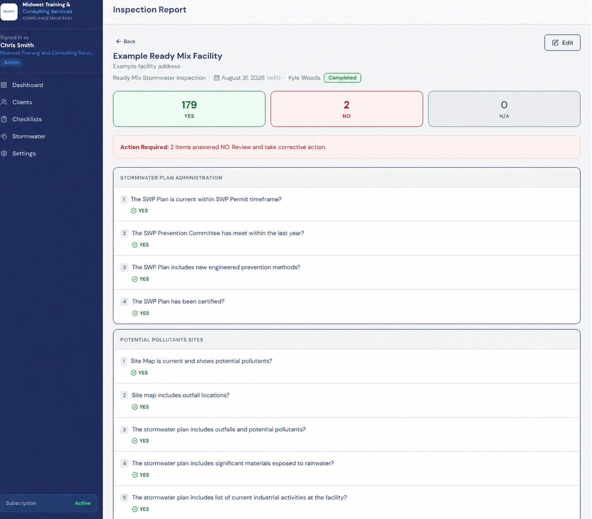
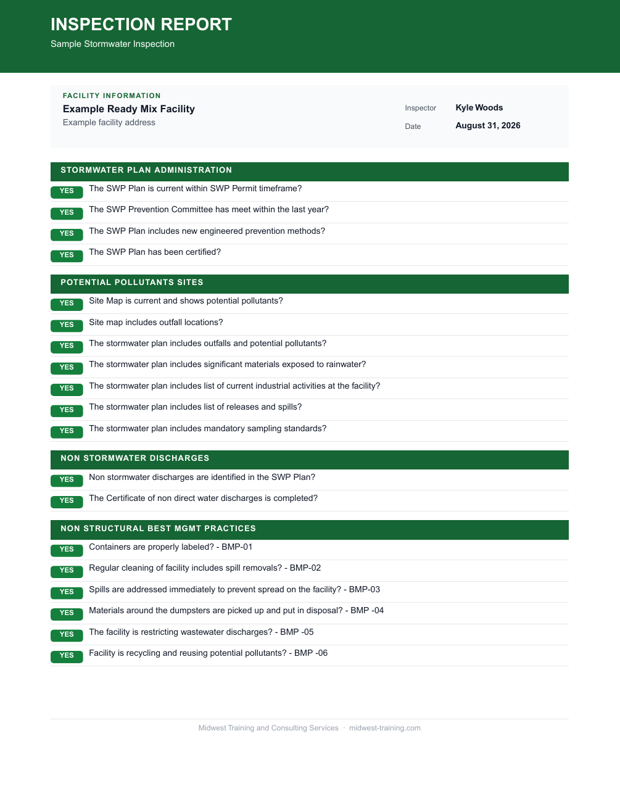

Website previewNot published. Forms are for review only.
Skip to content
The MTCS Inspection App
Turn inspections into clear next steps.
Keep facility details, checklist answers, and items needing attention together. Then produce a report your team can put to work.
Built around the inspection work we do with our clients.

Inspection report view · Example facility Enlarge screenshot ↗From checklist to follow-up
A clearer view of every inspection.
Keep the details together.
Facility, inspector, date, and checklist responses stay connected to the inspection record.
See what needs attention.
Yes, No, and N/A summaries make results easy to scan. An action-required notice highlights No answers for review.
Take the report with you.
PDF reports organize the inspection by section and include corrective action recommendations.
A sample inspection report
From the inspection screen to a useful record.
This ready mix stormwater report includes facility information, dated inspection results, and a separate corrective action section.
- Inspection answers organized by topic
- Facility, inspector, and inspection date
- Recommendations linked to the flagged items
9-page PDF · Ready mix stormwater inspection

Sample report · Example facilitySee how it fits your operation
Your inspection process.
A more organized record.
Tell us what you inspect, how many facilities you manage, and how you currently keep records. We can walk through the app with your needs in mind.
Request an app walkthrough Work through the checklist.
Keep responses grouped by the topics covered in the inspection.
Review the findings.
Use the summary and flagged answers to identify what needs follow-up.
Keep a clear report.
Use the PDF to review results and discuss corrective actions with your team.